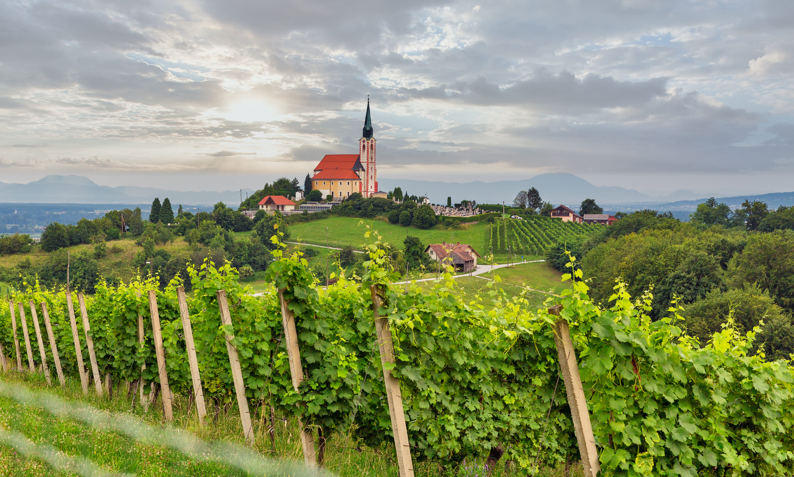
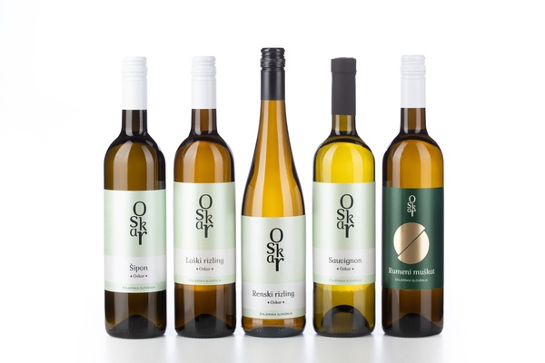
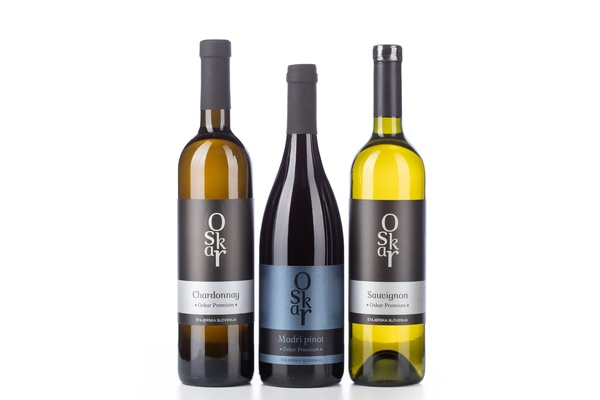
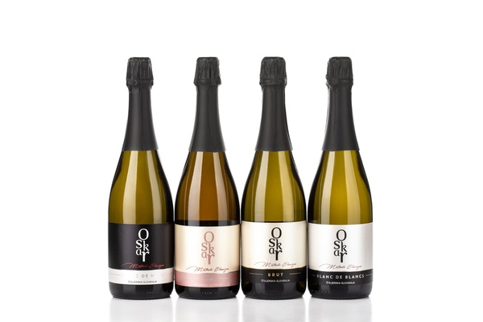

Vina Oskar

Dobrodošli na posestvu Markuš
Dobrodošli pri Vinih Oskar, kjer vino nastaja iz spoštovanja do narave, dolgoletne dediščine dedka Oskarja in ljubezni do vinske trte. Naša vina so rezultat skrbno obdelanih strmih goric, potrpežljivega dela v kleti ter občutka za detajl, ki ga z vinarjem Matejem Markušem prenašamo skozi rodove.
Malečniški griči se odlikujejo po bogati laporni prsti, ugodni sončni osončenosti ter svežem nočnem vetriču s Pohorja. To našim belim vinom daje prepoznavno sadnost in mineralno svežino, rdečim sortam polnost ter peninam plemenit značaj.
Raziščite naša vina

Classic Vina
Sveža, lahkotna in pitka vina, ki poudarjajo značaj sorte ter tipičen štajerski karakter.
Izvedite Več
Premium Vina
Bolj kompleksna in bogata vina z daljšim zorenjem, ki navdušujejo z eleganco, globino in izrazitim značajem.
Izvedite Več
Peneča vina
Sveže, sadne in lahkotne penine, ustvarjene za prijetne trenutke, druženje in nazdravljanje.
Izvedite VečMinister za zdravje opozarja: Prekomerno pitje alkohola škoduje zdravju!
Kmečki turizem & degustacije v kleti
Želite poskusiti naša vina tam, kjer zorijo? Z veseljem vas sprejmemo v naši obokani kleti v Malečniku, le streljaj iz Maribora. Pripravljamo vodene degustacije z vinarjem ter pristno domačo kulinarično spremljavo.
- Vodeni ogledi vinske kleti z enologom
- Degustacija vin in penin
- Domači štajerski narezek s tünko in svežim kruhom
- Piknik košarice med razglednimi vinogradi

📍 Lokacija
Malečnik 255, 2229 Malečnik, Štajerska
Mirno okolje sredi goric
🍷 Degustacije & Nakup
Po predhodni najavi
Osebni prevzem vin na domu
Možnost varne dostave do želene lokacije
📞 Kontakt & Rezervacije
Telefon: +386 31 382 950
E-pošta: vinaoskar@gmail.com
Delavni čas turizma: Petek in sobota po najavi
Odpri kontaktni obrazec →